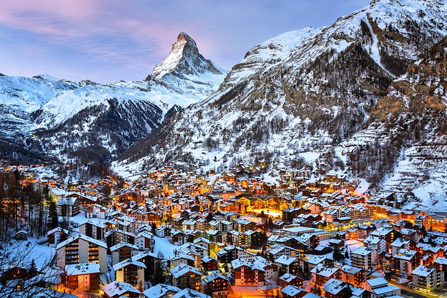
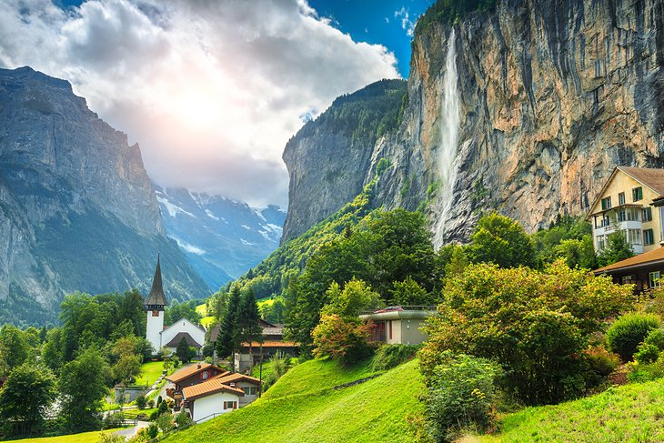

Official statistics of tourism were planned in 1852, but were only realized in 1934, and continued until 2003. Since 2004, the Federal Statistical Office had discontinued its statistics, but collaborates with Switzerland Tourism in the publication of yearly "Swiss Tourism Figures". In the year 2011, a total number of 4,967 registered hotels or hostels, offered a total of 240,000 beds in 128,000 rooms. This capacity was saturated to 41.7% (compared to 39.7% in 2005), amounting to a total of 38.8 million lodging nights. 14% of hotels were in Grisons, 12% each in the Valais and Eastern Switzerland, 11% in Central Switzerland and 9% in the Bernese Oberland. The ratio of lodging nights in relation to resident population ("tourism intensity", a measure for the relative importance of tourism to local economy) was largest in Grisons (8.3) and Bernese Oberland (5.3), compared to a Swiss average of 1.3. 56.4% of lodging nights were by visitors from abroad (broken down by nationality: 16.5% Germany, 6.3% United Kingdom, 4.8% United States, 3.6% France, 3.0% Italy). The total financial volume associated with tourism, including transportation, is estimated to CHF 35.5 billion (as of 2010) although some of this comes from fuel tax and sales of motorway vignettes. The total gross value added from tourism is 14.9 billion. Tourism provides a total of 144,838 full-time equivalent jobs in the entire country. The total financial volume of tourist lodging is 5.19 billion CHF and eating at the lodging provides an additional 5.19 billion. The total gross value added of 14.9 billion is about 2.9% of Switzerland's 2010 nominal GDP of 550.57 billion CHF. The most visited Swiss tourist attractions are first, the Rhine Falls, second, the Berne Bear exhibit (both without entrance fee), and third, with over 1.8 million paid entries: Zoo Basel.